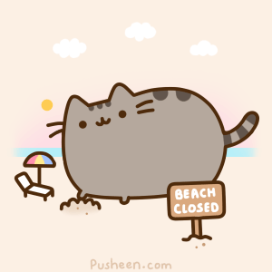
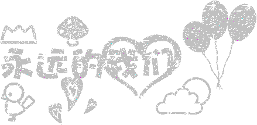

喜欢的文字 |
|||
| 我们都曾为那年的青春哭泣，后来想起，就笑了。最残忍不过时间，本以为刻骨铭心的故事，就在念念不忘间，渐渐遗忘。那些大悲大喜的际遇，最后想来，也只是：彼此经过，各自向前……

|
我假装无 所谓，告诉我自己，我那么的坚强，我可以承受一切的。可是，当我被遗忘在角落的时候，我才发现，我输不起，我会害怕。有的人走了就再也没回来过，所以，等待和犹豫才是这个世界上最无情的杀手！ | ||
| 总有很多东西无法挽留，比如走远的时光，比如枯萎的情感；总有很多东西难以割舍，比如追逐的梦想，比如心中的深爱。人生路上有很多未知因素，时时改变着我们行进的方向。一条路走不通的时候，不要眷恋前面的风景，不要回望来时的行程，鼓足勇气转个弯，或许就能转出生机，转出柳暗花明。 | 时间会飘远，岁月会流失，记忆会定格，美好会永存。我们只是凡尘中一粒微渺的尘埃，在漂泊中找寻幸福的痕迹，在梦行中证明存在的意义。憩居一处安谧的静地，不与风争鸣，不与日争荣，自由自在诠释生命的充盈；不羡慕高山的逶迤雄姿，不倾慕苍穹的广博神秘，拾一颗纯朴的心，做一个善良的人。 | ||
| 我也许不完美，但我一直在做自己。很多事，不是我想，就能做到。很多东西，不是我要，就能得到。很多人，不是我留，就能留住。有些人，就像指缝的阳光，温暖，美好，却永远无法抓住。不再挣扎，不再留恋，一个人也很好。时光如水，总是无言。若你安好，便是晴天。 |
|||
| 有些事，我们明知道是错的，也要去坚持，因为不甘心；有些人，我们明知道是爱的，也要去放弃，因为没结局；有时候，我们明知道没路了，却还在前行，因为习惯了。
 |
|||